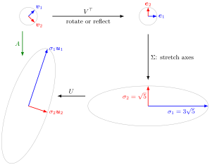

Let A be a real m×nmatrix of rankr and p=min(m,n). Then
A=UΣV⊤,
where U(m×m) and V(n×n) are orthogonal, U⊤U=Im,V⊤V=In, and Σ is m×n with diagonal entries σ1≥⋯≥σr>0=σr+1=⋯=σp and zeros off the diagonal. The σi are the singular values of A; the columns ui of U and vi of V are the left and right singular vectors. The factorization is the singular value decomposition (SVD) of A.
Every linear mapx↦Ax is a rotation or reflection (V⊤), then a scaling of the coordinate axes by σi, possibly with a change of dimension(Σ), then another rotation or reflection (U). The unit sphere is mapped onto an ellipsoid, possibly flattened, with semi-axes σiui.

The figure follows the 2×2 example below, A=(3405), with all four panels drawn to the same scale. V⊤ sends the right singular vectors v1,v2 to the standard basis vectorse1,e2;Σ stretches them to lengths σ1=35 and σ2=5;U moves the axes onto u1,u2. The result is the image of the unit circle under A, with semi-axes σ1u1=Av1 and σ2u2=Av2. In this example U and V both have determinant−1, so both outer steps are reflections.
Unlike diagonalization P−1AP, the SVD exists for every matrix, square or not, and uses two different orthonormal bases. It coincides with the spectral decomposition only for symmetric positive semidefinite matrices; for a symmetric matrix in general σi=∣λi∣.
A⊤A=VΣ⊤ΣV⊤ and AA⊤=UΣΣ⊤U⊤; both have nonzero eigenvalues σ12,…,σr2, and all their other eigenvalues are 0.
Avi=σiui and A⊤ui=σivi for i≤p.
Rank-one expansion and reduced SVD: A=i=1∑rσiuivi⊤=UrΣrVr⊤, using only the first r columns.
Orthonormal bases of the four subspaces (Fundamental Theorem of Linear Algebra): u1,…,ur for Col(A),ur+1,…,um for Null(A⊤),v1,…,vr for Row(A),vr+1,…,vn for Null(A).
The singular values are unique; U and V are not (signs can be flipped in pairs ui,vi, and repeated or zero singular values allow more freedom).
Many textbooks add the Eckart-Young theorem: keeping only the first k<r terms of the rank-one expansion gives the best approximation of A by a matrix of rank at most k. Math V does not cover it.
A rectangular rank-one matrix.A=110110 has A⊤A=(2222), eigenvalues 4,0. Hence σ1=2,σ2=0,v1=21(1,1)⊤,u1=21(1,1,0)⊤, and A=2u1v1⊤. Completing with v2=21(1,−1)⊤ and u2=21(1,−1,0)⊤,u3=(0,0,1)⊤ gives the full SVD with Σ=200000.
Aliases: SVD, singular value decomposition theorem
Keywords: A = U Σ V^T, left singular vectors, right singular vectors, reduced SVD, thin SVD, rank-one expansion, Eckart-Young
Symbols: lambda, phi, real numbers, sigma, square root, sum
Last updated: 27 October 2026 11:52
Singular Value DecompositionMoore-Penrose InverseEigenvalue and EigenvectorSymmetric MatrixDiagonalizationGram-Schmidt AlgorithmFundamental Theorem of Linear AlgebraOrthogonal MatrixSingular ValueLeast SquaresSimilarity TransformationDefinite Matrix